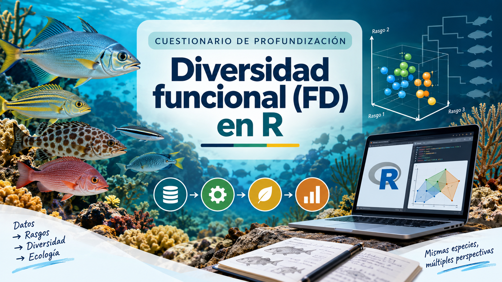
Cuestionario de profundización - FD
Código
quarto::quarto_render("Cuestionario_Diversidad_funcional.qmd")Propósito
Este cuestionario es una práctica de profundización después del Taller 2 (Diversidad Funcional con bloques A1, A2, B1 y B2). Se trabaja con comunidades tropicales de peces simuladas para fortalecer, en RStudio, las competencias para construir y defender un análisis de diversidad funcional (FD) y para el estudio de caso seleccionado. La secuencia reproduce la siguiente lógica metodológica:
datos → control de calidad → rasgos → distancia funcional → A1 → B1 → B2 → integración de los bloques.
Se debe conservar el código, ejecutar los bloques en RStudio, revisar los objetos creados y responder con base en sus propios resultados.
ImportanteRegla de trabajo
No se busca solamente obtener un número. Cada respuesta debe distinguir entre:
- qué se calculó;
- cómo se calculó;
- qué representa ecológicamente;
- qué limitación tiene la comparación.
1. Preparación del entorno
1.1 Paquetes
Código
library(tidyverse) # Carga el ecosistema tidyverse (dplyr, tidyr, ggplot2, purrr, etc.)
library(FD) # Aporta gowdis() y dbFD(): distancias y estimadores clásicos de FD (A1)
library(iNEXT.3D) # Aporta iNEXT3D() y estimate3D(): FD alfa por números de Hill (B1)
library(iNEXT.beta3D) # Aporta iNEXTbeta3D(): FD beta por números de Hill (B2)
library(kableExtra) # Habilita el formato enriquecido de tablasPregunta 1
Explicar por qué se utilizan paquetes distintos para dbFD(), iNEXT3D() e iNEXTbeta3D(). La respuesta debe relacionar cada herramienta con la pregunta ecológica que permite responder.
2. Simulación de un ensamblaje tropical
Se simulan 60 especies de peces distribuidas en tres tipos de ambiente tropical:
- Bosque inundable (BI)
- Arroyo de montaña (AM)
- Laguna costera (LC)
Se generan abundancias, rasgos continuos y rasgos dietarios binarios. La simulación incorpora deliberadamente diferencias en riqueza y esfuerzo de muestreo para que se pueda evaluar por qué la estandarización por cobertura resulta importante.
2.1 Semilla y nombres de especies
Código
set.seed(2026) # Fija semilla reproducible
n_sp <- 60 # Define número de especies
n_sitios <- 36 # Define número de sitios
sp <- paste0("Sp_",
sprintf("%02d", 1:n_sp)) # Genera nombres de especies
sitios <- paste0("S",
sprintf("%02d",
1:n_sitios)) # Genera nombres de sitios
ambientes <- rep(c("BI", "AM", "LC"),
each = 12) # Asigna ambientes a sitios
meta <- tibble(
Sitio = sitios, # Crea columna de sitios
Ambiente = ambientes # Crea columna de ambientes
)
# Muestra primeras filas
head(meta) %>%
kbl(booktabs = F, longtable = FALSE, digits = 2) %>%
kable_classic(full_width = F, html_font = "Cambria") %>%
kableExtra::row_spec(0, bold = TRUE)| Sitio | Ambiente |
|---|---|
| S01 | BI |
| S02 | BI |
| S03 | BI |
| S04 | BI |
| S05 | BI |
| S06 | BI |
Código
# Cuenta sitios por ambiente
table(meta$Ambiente) %>%
kbl(booktabs = F, longtable = FALSE, digits = 2) %>%
kable_classic(full_width = F, html_font = "Cambria") %>%
kableExtra::row_spec(0, bold = TRUE)| Var1 | Freq |
|---|---|
| AM | 12 |
| BI | 12 |
| LC | 12 |
Pregunta 2
- ¿Cuántas unidades de muestreo se simularon?
- ¿Cuántos sitios corresponden a cada ambiente?
- ¿Por qué es importante guardar
set.seed(2026)antes de una simulación destinada a una práctica reproducible?
2.2 Rasgos funcionales
Se generan cuatro rasgos continuos y seis rasgos dietarios binarios.
Código
rasgos <- tibble( # Crea tabla de rasgos
Species = sp, # Asigna nombres de especies
BodyLength = runif(n_sp, 4, 80), # Simula longitud corporal
BodyLengthMax = BodyLength * runif(n_sp, 1.1, 1.8), # Simula longitud máxima
ShapeFactor = runif(n_sp, 0.25, 1.00), # Simula forma corporal
TrophicLevel = runif(n_sp, 2.0, 4.8), # Simula nivel trófico
omnivory = rbinom(n_sp, 1, 0.35), # Simula omnivoría
detritivory = rbinom(n_sp, 1, 0.25), # Simula detritivoría
herbivory = rbinom(n_sp, 1, 0.30), # Simula herbivoría
invertivory = rbinom(n_sp, 1, 0.55), # Simula invertivoría
piscivory = rbinom(n_sp, 1, 0.25), # Simula piscivoría
carnivory = rbinom(n_sp, 1, 0.35) # Simula carnivoría
)
# Impresión de la tabla con los datos
head(rasgos) %>%
kbl(booktabs = F, longtable = FALSE, digits = 2) %>%
kable_classic(full_width = F, html_font = "Cambria") %>%
kableExtra::row_spec(0, bold = TRUE)| Species | BodyLength | BodyLengthMax | ShapeFactor | TrophicLevel | omnivory | detritivory | herbivory | invertivory | piscivory | carnivory |
|---|---|---|---|---|---|---|---|---|---|---|
| Sp_01 | 57.10 | 74.74 | 0.58 | 2.07 | 1 | 0 | 0 | 1 | 0 | 0 |
| Sp_02 | 46.30 | 79.95 | 0.35 | 2.76 | 0 | 0 | 0 | 1 | 0 | 1 |
| Sp_03 | 14.65 | 21.92 | 0.67 | 4.60 | 1 | 0 | 1 | 0 | 0 | 0 |
| Sp_04 | 25.71 | 36.49 | 0.83 | 3.76 | 1 | 0 | 0 | 1 | 0 | 1 |
| Sp_05 | 46.21 | 63.75 | 0.57 | 2.89 | 0 | 1 | 0 | 1 | 1 | 0 |
| Sp_06 | 5.91 | 6.84 | 0.30 | 2.73 | 0 | 0 | 0 | 1 | 1 | 0 |
Código
# Opcional: guardar la tabla de rasgos con datos simulados
guardar_tabla(rasgos, "rasgos1")Pregunta 3
Clasifique las variables de rasgos en:
- continuas;
- binarias;
- nominales o identificadoras.
Después indique cuáles variables deberían considerarse asimétricas binarias al calcular una distancia de Gower y explique por qué.
3. Simulación de abundancias con estructura ecológica
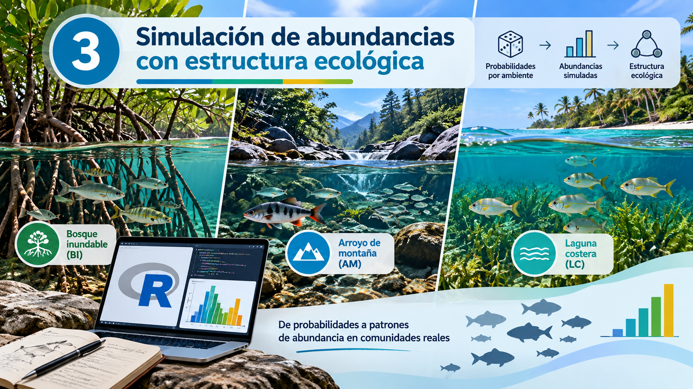
Se asignan probabilidades de ocurrencia diferentes según el ambiente. Además, se introduce una diferencia deliberada en el esfuerzo de muestreo.
Código
prob_base <- matrix(
0.10, # Probabilidad base uniforme de ocurrencia
nrow = n_sp, # Una fila por especie
ncol = 3, # Una columna por ambiente
dimnames = list(sp, c("BI", "AM", "LC")) # Nombra filas (especies) y columnas (ambientes)
)
prob_base[1:20, "BI"] <- 0.55 # Las especies 1-20 son características de BI
prob_base[21:40, "AM"] <- 0.55 # Las especies 21-40 son características de AM
prob_base[41:60, "LC"] <- 0.55 # Las especies 41-60 son características de LC
prob_base[21:40, "BI"] <- 0.08 # Baja probabilidad de las especies de AM en BI
prob_base[41:60, "BI"] <- 0.04 # Probabilidad aún más baja de las especies de LC en BI
prob_base[1:20, "AM"] <- 0.08 # Baja probabilidad de las especies de BI en AM
prob_base[41:60, "AM"] <- 0.08 # Baja probabilidad de las especies de LC en AM
prob_base[1:20, "LC"] <- 0.06 # Baja probabilidad de las especies de BI en LC
prob_base[21:40, "LC"] <- 0.06 # Baja probabilidad de las especies de AM en LC
esfuerzo <- c(BI = 900, AM = 350, LC = 120) # Define un esfuerzo de muestreo distinto por ambiente (a propósito)
abundancias <- map_dfc(
seq_len(n_sitios), # Itera sobre cada sitio
\(i) {
amb <- meta$Ambiente[i] # Identifica el ambiente de ese sitio
p <- prob_base[, amb] # Extrae el vector de probabilidades de ese ambiente
lambda <- esfuerzo[amb] * p / sum(p) # Reparte el esfuerzo total del ambiente entre las especies
tibble(!!meta$Sitio[i] := rpois(n_sp, lambda)) # Simula abundancias con una distribución de Poisson
}
) %>%
as.data.frame() # Convierte a data.frame (formato que exige FD/iNEXT)
rownames(abundancias) <- sp # Asigna el nombre de especie como fila
dim(abundancias) # Confirma las dimensiones (60 especies x 36 sitios)[1] 60 36Código
# colSums(abundancias) # Muestra el total de individuos simulados por sitio
# Impresión de la tabla con los datos
head(abundancias, 10) %>%
dplyr::select(1:10) %>%
kbl(booktabs = F, longtable = FALSE, digits = 2) %>%
kable_classic(full_width = F, html_font = "Cambria") %>%
kableExtra::row_spec(0, bold = TRUE)| S01 | S02 | S03 | S04 | S05 | S06 | S07 | S08 | S09 | S10 | |
|---|---|---|---|---|---|---|---|---|---|---|
| Sp_01 | 36 | 30 | 32 | 38 | 28 | 36 | 40 | 25 | 39 | 46 |
| Sp_02 | 35 | 40 | 38 | 33 | 33 | 32 | 28 | 41 | 41 | 50 |
| Sp_03 | 31 | 43 | 25 | 24 | 43 | 42 | 37 | 40 | 29 | 36 |
| Sp_04 | 38 | 36 | 25 | 31 | 35 | 27 | 38 | 32 | 45 | 44 |
| Sp_05 | 43 | 40 | 38 | 26 | 31 | 33 | 49 | 33 | 32 | 35 |
| Sp_06 | 37 | 43 | 35 | 33 | 35 | 51 | 32 | 35 | 27 | 34 |
| Sp_07 | 39 | 32 | 29 | 40 | 41 | 36 | 41 | 27 | 29 | 40 |
| Sp_08 | 38 | 36 | 29 | 33 | 45 | 36 | 42 | 38 | 38 | 36 |
| Sp_09 | 38 | 39 | 46 | 33 | 33 | 33 | 34 | 32 | 32 | 38 |
| Sp_10 | 22 | 36 | 30 | 30 | 24 | 38 | 38 | 38 | 31 | 40 |
3.1 Reconstrucción de la tabla de trabajo
Código
biol <-
abundancias %>%
as_tibble(rownames = "Species") %>% # Recupera el nombre de especie como columna
pivot_longer(
-Species, # Mantiene Species fija, pivota el resto
names_to = "Sitio", # Crea una columna con el código de sitio
values_to = "Abundancia" # Crea una columna con la abundancia correspondiente
) %>%
left_join(meta, by = "Sitio") # Añade el ambiente correspondiente a cada sitio
# Impresión de la tabla con los datos
head(biol) %>%
kbl(booktabs = F, longtable = FALSE, digits = 2) %>%
kable_classic(full_width = F, html_font = "Cambria") %>%
kableExtra::row_spec(0, bold = TRUE)| Species | Sitio | Abundancia | Ambiente |
|---|---|---|---|
| Sp_01 | S01 | 36 | BI |
| Sp_01 | S02 | 30 | BI |
| Sp_01 | S03 | 32 | BI |
| Sp_01 | S04 | 38 | BI |
| Sp_01 | S05 | 28 | BI |
| Sp_01 | S06 | 36 | BI |
Código
biol %>%
group_by(Ambiente) %>% # Agrupa por ambiente
summarise(
Sitios = n_distinct(Sitio), # Cuenta los sitios de cada ambiente
Individuos = sum(Abundancia), # Suma todos los individuos registrados
Riqueza = n_distinct(Species[Abundancia > 0]), # Cuenta las especies con al menos un registro
.groups = "drop" # Retira la agrupación del resultado final
) %>%
kbl(
booktabs = TRUE, align = "c",
caption = "Individuos y riqueza observada por ambiente (antes de calcular FD)"
) %>%
kable_styling(
bootstrap_options = c("striped", "hover", "condensed"),
full_width = FALSE, position = "center"
) %>%
row_spec(0, bold = TRUE,
color = "white",
background = "#2E4057")| Ambiente | Sitios | Individuos | Riqueza |
|---|---|---|---|
| AM | 12 | 4163 | 60 |
| BI | 12 | 10706 | 60 |
| LC | 12 | 1476 | 60 |
Pregunta 4
Sin calcular todavía FD:
- ¿Cuál ambiente tiene mayor número de individuos?
- ¿Cuál tiene mayor riqueza observada?
- ¿La riqueza observada y el número de individuos representan exactamente la misma propiedad ecológica?
- ¿Qué ambiente podría estar más afectado por la diferencia de esfuerzo?
Escriba una predicción antes de continuar con B1.
4. Control de calidad de la matriz de abundancias
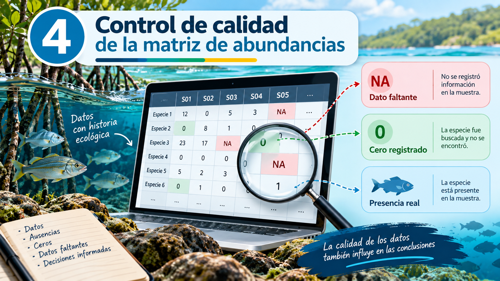
4.1 Comprobaciones mínimas
Código
stopifnot(
all(abundancias >= 0), # Verifica que no haya abundancias negativas
all(is.finite(as.matrix(abundancias))), # Verifica que no haya valores infinitos o NA
!anyDuplicated(rownames(abundancias)), # Verifica que no haya especies duplicadas
!anyDuplicated(colnames(abundancias)) # Verifica que no haya sitios duplicados
)
sum(is.na(abundancias)) # Cuenta los valores NA (debe dar 0)[1] 0Código
sum(abundancias < 0) # Cuenta los valores negativos (debe dar 0)[1] 0Pregunta 5
¿Por qué una celda con NA no debería reemplazarse automáticamente por cero en cualquier análisis ecológico?
Indique específicamente qué diferencia existe entre:
- ausencia real de una especie;
- cero registrado;
- dato faltante.
5. Construcción del espacio funcional
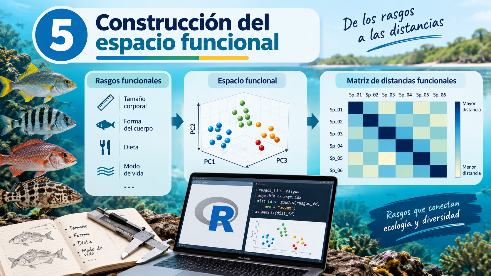
5.1 Preparar la matriz de rasgos
Código
rasgos_fd <- rasgos %>%
column_to_rownames("Species") # Usa el nombre de especie como identificador de fila
stopifnot(identical(rownames(rasgos_fd), rownames(abundancias))) # Verifica la alineación especie a especie5.2 Gower con binarias asimétricas
Código
vars_bin <- c(
"omnivory", # Rasgo binario de dieta 1
"detritivory", # Rasgo binario de dieta 2
"herbivory", # Rasgo binario de dieta 3
"invertivory", # Rasgo binario de dieta 4
"piscivory", # Rasgo binario de dieta 5
"carnivory" # Rasgo binario de dieta 6
)
asym_idx <- match(vars_bin, colnames(rasgos_fd)) # Ubica la posición de esos rasgos dentro de rasgos_fd
fd_dist <- gowdis(
rasgos_fd, # Matriz de rasgos (especies x rasgos)
asym.bin = asym_idx # Indica qué columnas binarias se tratan como asimétricas
)
round(as.matrix(fd_dist)[1:6, 1:6],3) # Muestra un fragmento 6x6 de la matriz de distancias Sp_01 Sp_02 Sp_03 Sp_04 Sp_05 Sp_06
Sp_01 0.000 0.394 0.581 0.386 0.445 0.555
Sp_02 0.394 0.000 0.753 0.380 0.434 0.461
Sp_03 0.581 0.753 0.000 0.474 0.728 0.681
Sp_04 0.386 0.380 0.474 0.000 0.576 0.577
Sp_05 0.445 0.434 0.728 0.576 0.000 0.348
Sp_06 0.555 0.461 0.681 0.577 0.348 0.000Pregunta 6
Interprete una distancia funcional pequeña y una distancia funcional grande.
Después explique por qué, para estos rasgos dietarios, se utiliza:
asym.bin = asym_idxen lugar de tratar todas las binarias como simétricas.
6. A1 — Índices clásicos con dbFD()
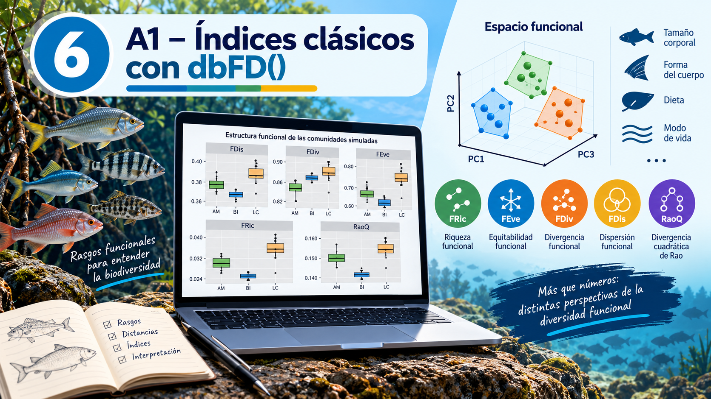
6.1 Cálculo
Código
fd_a1 <-
dbFD(
x = fd_dist, # Matriz de distancias funcionales (especie x especie)
a = t(abundancias), # Transpone: dbFD() exige sitios en filas y especies en columnas
w.abun = TRUE, # Pondera los índices por abundancia relativa
calc.FRic = TRUE, # Calcula la riqueza funcional (FRic)
calc.FDiv = TRUE, # Calcula la divergencia funcional (FDiv)
calc.CWM = FALSE, # No calcula las medias ponderadas por comunidad (CWM)
corr = "sqrt", # Aplica corrección de raíz cuadrada para garantizar euclidianidad
m = 4, # Limita el cálculo de FRic a 4 ejes de PCoA (ver nota de rendimiento más abajo)
messages = FALSE # Suprime los mensajes de progreso de la función
)
AdvertenciaNota de rendimiento — por qué aparece
m = 4
Los rasgos de esta simulación son independientes entre sí (cada runif()/rbinom() es una tirada aparte, sin correlación biológica real). Por eso, en el PCoA de la distancia de Gower casi todos los ejes (58 de 59) quedan con varianza positiva — a diferencia de rasgos biológicos reales, que suelen estar correlacionados y comprimir el espacio efectivo a pocos ejes.
Sin m = 4, dbFD() intenta la envolvente convexa de FRic en ese espacio de decenas de dimensiones, agota la memoria y bloquea RStudio sin mensaje de error — solo deja de responder. m = 4 limita el cálculo a los primeros 4 ejes, que es además la práctica recomendada por Villéger et al. (2008) cuando el número de especies no justifica más dimensiones. Con datos reales correlacionados (como en el Taller 2) este límite rara vez hace falta explícitamente, pero es buena práctica fijarlo siempre.
6.2 Extraer resultados
Código
fd_sitios <- tibble(
Sitio = colnames(abundancias), # Los nombres de sitio están en las columnas de abundancias
FRic = as.numeric(fd_a1$FRic), # Extrae la riqueza funcional por sitio
FEve = as.numeric(fd_a1$FEve), # Extrae la equidad funcional por sitio
FDiv = as.numeric(fd_a1$FDiv), # Extrae la divergencia funcional por sitio
FDis = as.numeric(fd_a1$FDis), # Extrae la dispersión funcional por sitio
RaoQ = as.numeric(fd_a1$RaoQ) # Extrae la entropía cuadrática de Rao por sitio
) %>%
left_join(meta, by = "Sitio") # Añade el ambiente correspondiente a cada sitio
fd_sitios %>%
pivot_longer(
c(FRic, FEve, FDiv, FDis, RaoQ), # Selecciona los cinco índices a graficar
names_to = "Indice", # Crea una columna con el nombre del índice
values_to = "Valor" # Crea una columna con el valor correspondiente
) %>%
ggplot(aes(Ambiente, Valor)) +
geom_boxplot(outlier.shape = NA) + # Dibuja la distribución por ambiente, sin marcar outliers aparte
geom_jitter(width = 0.08, alpha = 0.55) + # Superpone cada sitio como un punto disperso
facet_wrap(~Indice, scales = "free_y") + # Separa un panel por índice, con escala propia
labs(
x = "Ambiente",
y = "Valor",
title = "Estructura funcional de las comunidades simuladas"
)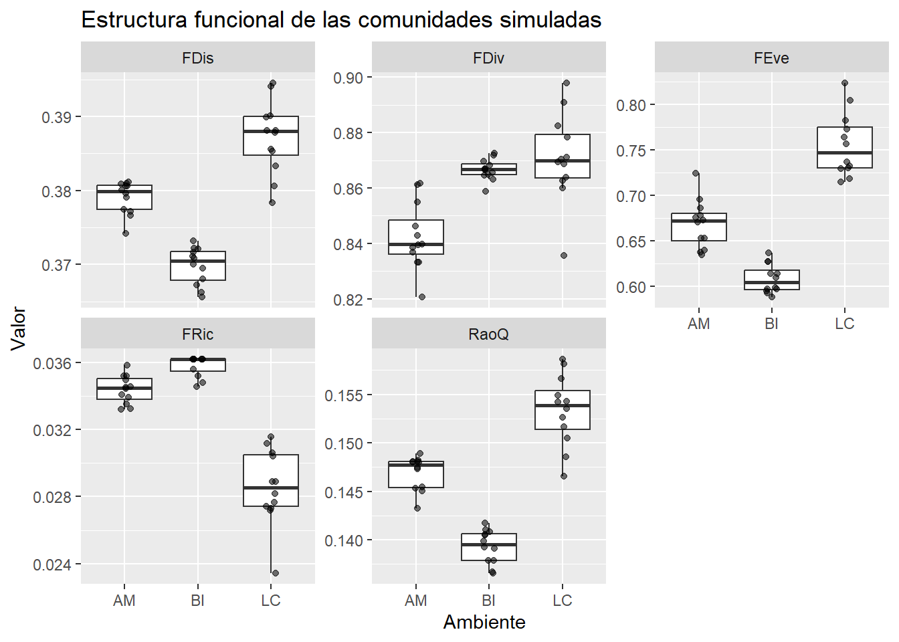
Pregunta 7
Para cada índice:
- FRic
- FEve
- FDiv
- FDis
- RaoQ
escriba qué propiedad funcional representa.
Después seleccione uno de los índices y responda:
¿Por qué sería incorrecto afirmar que “el ambiente con el valor más alto de este índice tiene necesariamente la mayor diversidad funcional” sin especificar qué índice se está utilizando?
6.3 Diagnóstico de resultados no estimables
Código
colSums(is.na(fd_sitios[c("FRic", "FEve", "FDiv", "FDis", "RaoQ")])) # Cuenta los NA de cada índice, por columnaFRic FEve FDiv FDis RaoQ
0 0 0 0 0 Pregunta 8
Si FRic, FEve o FDiv presentan NA en algún sitio:
- ¿debe interpretarse automáticamente como FD = 0?
- ¿qué información sobre la composición local debería revisarse?
- ¿por qué la solución no consiste simplemente en reemplazar todos los
NApor cero?
7. Comparación por ambiente: una primera lectura A1
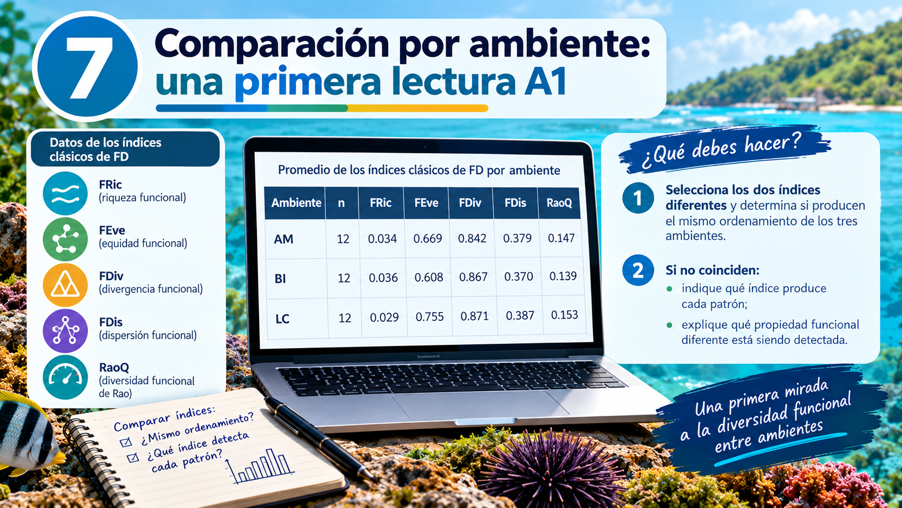
Código
fd_ambiente <- fd_sitios %>%
group_by(Ambiente) %>% # Agrupa los sitios por ambiente
summarise(
n = n(), # Cuenta el número de sitios por ambiente
across(
c(FRic, FEve, FDiv, FDis, RaoQ),
\(x) mean(x, na.rm = TRUE) # Promedia cada índice, ignorando los NA
),
.groups = "drop" # Retira la agrupación del resultado final
)
fd_ambiente %>%
kbl(
booktabs = TRUE, digits = 3, align = "c",
caption = "Promedio de los índices clásicos de FD por ambiente"
) %>%
kable_styling(
bootstrap_options = c("striped", "hover", "condensed"),
full_width = FALSE, position = "center"
) %>%
row_spec(0, bold = TRUE, color = "white", background = "#2E4057") %>%
column_spec(1, bold = TRUE) # Resalta la columna de ambiente| Ambiente | n | FRic | FEve | FDiv | FDis | RaoQ |
|---|---|---|---|---|---|---|
| AM | 12 | 0.034 | 0.669 | 0.842 | 0.379 | 0.147 |
| BI | 12 | 0.036 | 0.608 | 0.867 | 0.370 | 0.139 |
| LC | 12 | 0.029 | 0.755 | 0.871 | 0.387 | 0.153 |
Pregunta 9
Seleccione dos índices diferentes y determine si producen el mismo ordenamiento de los tres ambientes.
Si no coinciden:
- indique qué índice produce cada patrón;
- explique qué propiedad funcional diferente está siendo detectada.
8. A2 — Partición de la diversidad funcional con Rao
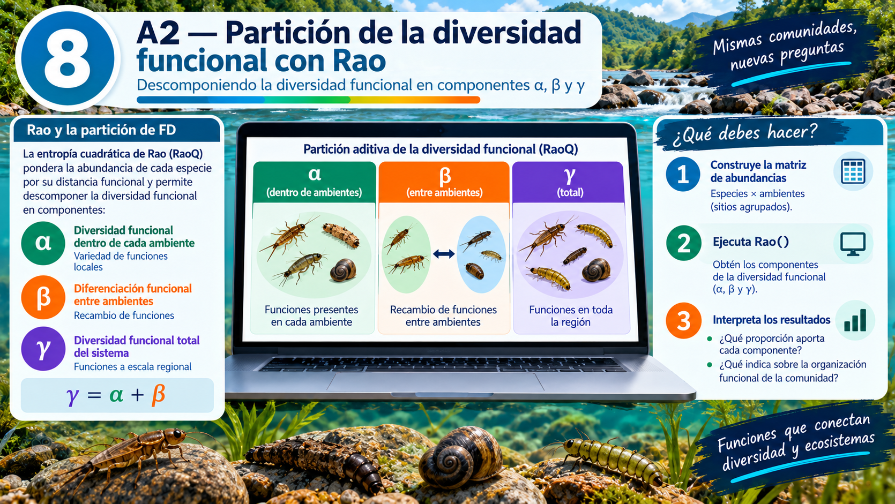
A2 cambia la pregunta: en lugar de describir cada ambiente mediante varios índices por separado (como en A1), se busca descomponer la diversidad funcional en componentes alfa, beta y gamma mediante la entropía cuadrática de Rao.
\[\gamma = \overline{\alpha} + \beta_{add} \qquad \text{y} \qquad \gamma = \overline{\alpha} \times \beta_{mult}\]
8.1 De sitios a ambientes
Código
biol_ambiente <- abundancias %>%
as_tibble(rownames = "Species") %>%
pivot_longer(-Species, names_to = "Sitio", values_to = "Abundancia") %>%
left_join(meta, by = "Sitio") %>%
group_by(Species, Ambiente) %>%
summarise(Abundancia = sum(Abundancia), .groups = "drop") %>%
pivot_wider(names_from = Ambiente, values_from = Abundancia, values_fill = 0) %>%
column_to_rownames("Species") %>%
as.data.frame() # Especies (filas) x ambientes (columnas) — formato que exige Rao()8.2 Ejecutar Rao()
Código
source("Rao.R") # Carga la función Rao(), con Qdecomp() y disc() internas
fd_ambientes <- Rao(
sample = biol_ambiente, # Especies x ambientes
dfunc = fd_dist, # Matriz de distancias funcionales (Gower, de la sección 5.2)
dphyl = NULL, # Sin distancia filogenética (llega en la Unidad IV)
weight = FALSE, # Definición original de Rao (sin ponderar por abundancia total)
Jost = FALSE # Sin corrección de Jost (números efectivos)
)8.3 Leer α, β y γ
Código
rao_alpha <- tibble(
Ambiente = names(fd_ambientes$FD$Alpha),
Alfa_FD = as.numeric(fd_ambientes$FD$Alpha)
)
rao_particion <- tibble(
Componente = c("Alfa media", "Gamma", "Beta aditiva", "Beta multiplicativa"),
Valor = c(
as.numeric(fd_ambientes$FD$Mean_Alpha),
as.numeric(fd_ambientes$FD$Gamma),
as.numeric(fd_ambientes$FD$Beta_add),
as.numeric(fd_ambientes$FD$Gamma / fd_ambientes$FD$Mean_Alpha)
)
)
rao_alpha %>%
kbl(booktabs = TRUE, digits = 3, align = "c", caption = "Diversidad funcional alfa por ambiente (Rao)") %>%
kable_styling(bootstrap_options = c("striped", "hover", "condensed"), full_width = FALSE, position = "center") %>%
row_spec(0, bold = TRUE, color = "white", background = "#2E4057")| Ambiente | Alfa_FD |
|---|---|
| AM | 0.518 |
| BI | 0.503 |
| LC | 0.528 |
Código
rao_particion %>%
kbl(booktabs = TRUE, digits = 3, align = "c", caption = "Partición regional de la diversidad funcional") %>%
kable_styling(bootstrap_options = c("striped", "hover", "condensed"), full_width = FALSE, position = "center") %>%
row_spec(0, bold = TRUE, color = "white", background = "#2E4057") %>%
row_spec(3:4, bold = TRUE, background = "#FDF3E7")| Componente | Valor |
|---|---|
| Alfa media | 0.516 |
| Gamma | 0.523 |
| Beta aditiva | 0.007 |
| Beta multiplicativa | 1.013 |
Pregunta 10
Con base en las dos tablas anteriores:
- ¿Qué representa la “Alfa media” frente al “Alfa” de cada ambiente por separado?
- Verifique con sus propios números: ¿se cumple
Gamma ≈ Alfa media + Beta aditiva? - ¿El ambiente con mayor Alfa_FD aquí coincide con el que tuvo mayor FRic en la Pregunta 9 (sección A1)? Si no coincide, ¿qué le dice eso sobre la diferencia entre describir cada sitio por separado (A1) y particionar la diversidad regional (A2)?
8.4 Beta entre pares de ambientes
Código
beta_add_mat <- as.matrix(fd_ambientes$FD$Pairwise_samples$Beta_add)
beta_prop_mat <- as.matrix(fd_ambientes$FD$Pairwise_samples$Beta_prop)
pair_index <- tibble(
Comparacion = c("BI_vs_AM", "BI_vs_LC", "AM_vs_LC"), # mismo orden que en B2 (sección 13)
Zona_1 = c("BI", "BI", "AM"),
Zona_2 = c("AM", "LC", "LC")
)
rao_beta_pares <- pair_index %>%
mutate(
Beta_add = map2_dbl(Zona_1, Zona_2, ~ beta_add_mat[.y, .x]),
Beta_prop = map2_dbl(Zona_1, Zona_2, ~ beta_prop_mat[.y, .x])
) %>%
select(Comparacion, Beta_add, Beta_prop)
rao_beta_pares %>%
kbl(booktabs = TRUE, digits = 3, align = "c", caption = "Beta funcional entre pares de ambientes (Rao, sin estandarizar)") %>%
kable_styling(bootstrap_options = c("striped", "hover", "condensed"), full_width = FALSE, position = "center") %>%
row_spec(0, bold = TRUE, color = "white", background = "#2E4057") %>%
row_spec(which.max(rao_beta_pares$Beta_prop), bold = TRUE, background = "#FDECEC")| Comparacion | Beta_add | Beta_prop |
|---|---|---|
| BI_vs_AM | 0.004 | 0.748 |
| BI_vs_LC | 0.007 | 1.291 |
| AM_vs_LC | 0.005 | 0.880 |
NotaQué añade A2 respecto a A1
A1 describe la estructura funcional de cada ambiente por separado; A2 permite preguntar cuánto cambia la diversidad funcional entre ambientes y cómo se relacionan α, β y γ a escala regional.
La partición de Rao usada aquí no corrige el desbalance de esfuerzo entre AM, BI y LC (Pregunta 4: 4163, 10706 y 1476 individuos). Por eso estos resultados observados son el punto de comparación clave con B1 y B2, que sí estandarizan por cobertura.
Pregunta 11
- ¿Qué comparación de ambientes tiene la mayor Beta_prop, y qué significa ecológicamente que sea la más alta?
- Dado el fuerte desbalance de esfuerzo entre BI (10706 individuos) y LC (1476 individuos), ¿podría parte de la beta observada entre
BI_vs_LCdeberse al esfuerzo de muestreo y no a una diferencia funcional real? - Escriba una predicción: cuando se estandarice por cobertura en B2 (sección 13), ¿espera que
BI_vs_LCsiga siendo la comparación con mayor beta, o podría cambiar? Justifique antes de continuar.
9. B1 — Números efectivos de Hill para FD alfa
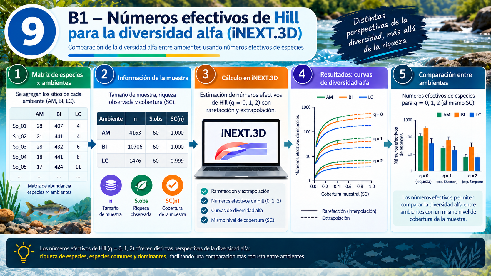
9.1 Preparar las comunidades
Para B1 se agregan los sitios de cada ambiente. Se obtiene una matriz de especies × ambientes.
Código
biol_ambiente <- abundancias %>%
as_tibble(rownames = "Species") %>% # Recupera el nombre de especie como columna
pivot_longer(
-Species, # Mantiene Species fija, pivota el resto
names_to = "Sitio", # Crea una columna con el código de sitio
values_to = "Abundancia" # Crea una columna con la abundancia correspondiente
) %>%
left_join(meta, by = "Sitio") %>% # Añade el ambiente correspondiente a cada sitio
group_by(Species, Ambiente) %>% # Agrupa por especie y ambiente
summarise(Abundancia = sum(Abundancia), .groups = "drop") %>% # Suma las abundancias dentro de cada grupo
pivot_wider(
names_from = Ambiente, # Cada ambiente se convierte en una columna
values_from = Abundancia,
values_fill = 0 # Rellena con 0 las combinaciones especie-ambiente sin registros
) %>%
column_to_rownames("Species") %>% # Usa el nombre de especie como fila
as.data.frame() # Convierte a data.frame (formato que exige iNEXT3D())
head(biol_ambiente,10) # Especies (filas) x ambientes (columnas) — vista completa en consola AM BI LC
Sp_01 28 407 4
Sp_02 21 441 4
Sp_03 28 432 6
Sp_04 18 441 8
Sp_05 17 424 11
Sp_06 21 425 7
Sp_07 19 417 7
Sp_08 27 458 5
Sp_09 25 448 2
Sp_10 25 391 89.2 iNEXT3D()
Código
fd_b1 <- iNEXT3D(
data = biol_ambiente, # Matriz de abundancias (especies x ambientes)
diversity = "FD", # Dimensión funcional
q = c(0, 1, 2), # Órdenes de diversidad a estimar
datatype = "abundance", # Tipo de dato: abundancias
knots = 20, # Número de puntos de la curva de rarefacción/extrapolación
nboot = 30, # Número de remuestreos bootstrap
FDdistM = as.matrix(fd_dist), # Matriz de distancias funcionales
FDtype = "AUC", # Método de área bajo la curva
FDcut_number = 30 # Número de umbrales de distancia considerados
)
fd_b1$FDInfo %>%
kbl(
booktabs = TRUE, digits = 3, align = "c",
caption = "Información muestral por ambiente: tamaño de muestra, riqueza observada y cobertura"
) %>%
kable_styling(
bootstrap_options = c("striped", "hover", "condensed"),
full_width = FALSE, position = "center"
) %>%
row_spec(0, bold = TRUE, color = "white", background = "#2E4057") %>%
scroll_box(width = "100%") # Habilita desplazamiento horizontal si la tabla no cabe en pantalla| Assemblage | n | S.obs | SC(n) | SC(2n) | dmin | dmean | dmax |
|---|---|---|---|---|---|---|---|
| AM | 4163 | 60 | 1.000 | 1 | 0.045 | 0.518 | 0.902 |
| BI | 10706 | 60 | 1.000 | 1 | 0.045 | 0.503 | 0.902 |
| LC | 1476 | 60 | 0.999 | 1 | 0.045 | 0.528 | 0.902 |
Nota
Aquí se usan más réplicas bootstrap que en el taller introductorio, para discutir también precisión. En un análisis real, los parámetros deben ajustarse al objetivo, al tamaño de los datos y al costo computacional.
Este bloque puede tardar varios minutos (superó los 3 minutos en pruebas con nboot = 30, FDcut_number = 30). Si RStudio parece no responder, no es un error: es el costo de la curva completa con precisión bootstrap suficiente. La sección 13.1 (iNEXTbeta3D()) usa los mismos parámetros y puede tardar similar o más. Se recomienda correr estos dos bloques una sola vez y trabajar sobre los objetos ya guardados (fd_b1, fd_b2) en el resto del documento.
10. Interpretación de q = 0, 1 y 2
Pregunta 12
Complete conceptualmente la siguiente tabla:
| Orden q | Pregunta ecológica |
|---|---|
| q = 0 | ¿Qué representa principalmente? |
| q = 1 | ¿Qué papel desempeñan las abundancias? |
| q = 2 | ¿Qué ocurre con la influencia de las entidades dominantes? |
Después responda:
¿Por qué comparar solamente q = 0 puede ocultar diferencias importantes en la estructura de abundancias?
11. Curvas de rarefacción y extrapolación
11.1 Por tamaño de muestra
Código
ggiNEXT3D(
fd_b1, # Resultado de iNEXT3D()
type = 1, # Curvas basadas en tamaño de muestra
facet.var = "Assemblage", # Un panel por ambiente
color.var = "Order.q" # Colorea por orden de diversidad q
)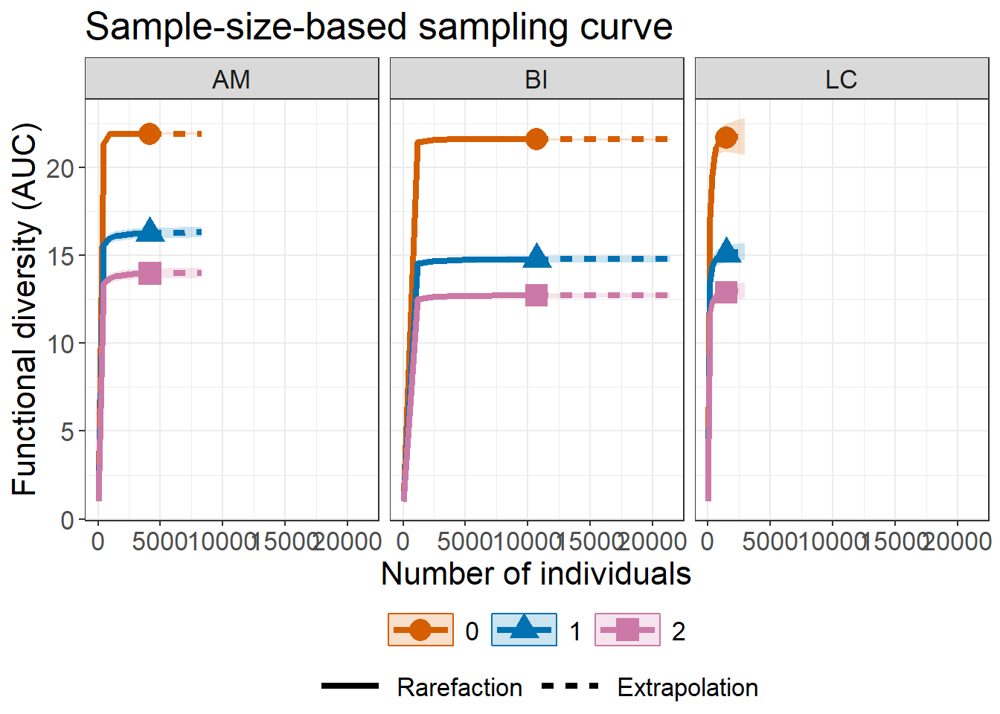
Pregunta 13
Examine las curvas y responda:
- ¿Qué eje representa el tamaño de muestra?
- ¿Qué diferencia existe entre rarefacción y extrapolación?
- ¿Qué indicaría una curva que todavía aumenta fuertemente al final del esfuerzo observado?
- ¿Por qué no debería compararse directamente el valor final de dos curvas si sus coberturas son muy diferentes?
12. Cobertura muestral
Código
ggiNEXT3D(
fd_b1,
type = 3, # Curvas basadas en cobertura de la muestra
facet.var = "Order.q" # Un panel por orden de diversidad q
)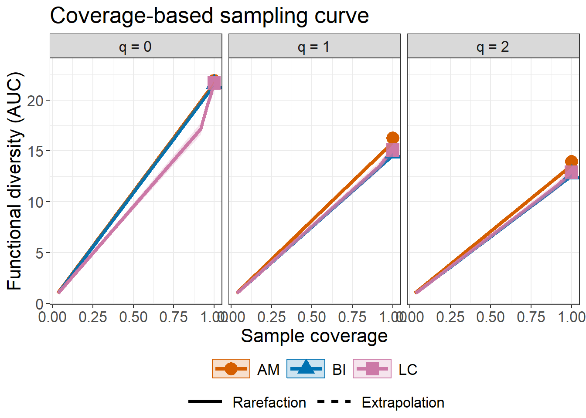
Pregunta 14
Explique con sus propias palabras la diferencia entre:
“comparar al mismo tamaño de muestra”
y
“comparar a la misma cobertura muestral”.
Después indique cuál de las dos estrategias resulta especialmente útil cuando los ambientes presentan esfuerzos de muestreo muy diferentes.
13. B1 — Comparación a cobertura común
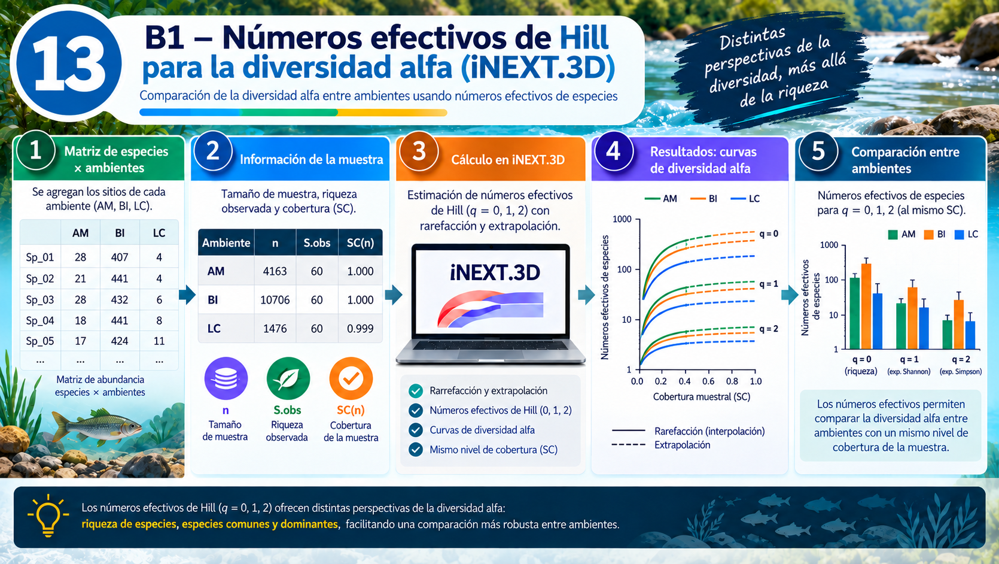
Código
nivel_cobertura <- min(
as.numeric(fd_b1$FDInfo$`SC(n)`), # Extrae la cobertura observada de cada ambiente
na.rm = TRUE # Ignora los valores ausentes, si los hubiera
) # Toma la cobertura más baja como nivel de referencia común
nivel_cobertura # Muestra el nivel de cobertura seleccionado[1] 0.9993243Código
fd_b1_comun <- estimate3D(
data = biol_ambiente, # Matriz de abundancias (especies x ambientes)
diversity = "FD", # Dimensión funcional
q = c(0, 1, 2), # Órdenes de diversidad a estimar
datatype = "abundance", # Tipo de dato: abundancias
base = "coverage", # Estandariza por cobertura muestral
level = nivel_cobertura, # Fija el nivel de cobertura común entre ambientes
FDdistM = as.matrix(fd_dist), # Matriz de distancias funcionales
FDtype = "AUC", # Método de área bajo la curva
FDcut_number = 30 # Número de umbrales de distancia considerados
)
fd_b1_comun %>% # estimate3D() ya devuelve el data.frame de estimaciones directamente (no una lista)
kbl(
booktabs = TRUE, digits = 3, align = "c",
caption = "Diversidad funcional alfa estimada a cobertura común, por ambiente"
) %>%
kable_styling(
bootstrap_options = c("striped", "hover", "condensed"),
full_width = FALSE, position = "center"
) %>%
row_spec(0, bold = TRUE, color = "white", background = "#2E4057") %>%
scroll_box(width = "100%") # Habilita desplazamiento horizontal si la tabla no cabe en pantalla| Assemblage | Order.q | SC | m | Method | qFD | s.e. | qFD.LCL | qFD.UCL |
|---|---|---|---|---|---|---|---|---|
| AM | 0 | 0.999 | 984.010 | Rarefaction | 21.893 | 0.044 | 21.806 | 21.980 |
| AM | 1 | 0.999 | 984.010 | Rarefaction | 16.003 | 0.147 | 15.716 | 16.291 |
| AM | 2 | 0.999 | 984.010 | Rarefaction | 13.726 | 0.134 | 13.464 | 13.988 |
| BI | 0 | 0.999 | 1541.545 | Rarefaction | 21.524 | 0.037 | 21.451 | 21.597 |
| BI | 1 | 0.999 | 1541.545 | Rarefaction | 14.605 | 0.091 | 14.426 | 14.784 |
| BI | 2 | 0.999 | 1541.545 | Rarefaction | 12.571 | 0.072 | 12.429 | 12.713 |
| LC | 0 | 0.999 | 1476.000 | Observed | 21.681 | 0.588 | 20.528 | 22.834 |
| LC | 1 | 0.999 | 1476.000 | Observed | 15.086 | 0.255 | 14.586 | 15.586 |
| LC | 2 | 0.999 | 1476.000 | Observed | 12.896 | 0.250 | 12.405 | 13.386 |
Pregunta 15
Construya una tabla que contenga:
- Ambiente
- q
- cobertura
- FD estimada
- error estándar
Después responda:
¿El ambiente que presentó mayor FD observada en A1/A2 sigue presentando el mismo patrón cuando las comunidades se comparan a cobertura común?
14. B2 — Diversidad beta funcional
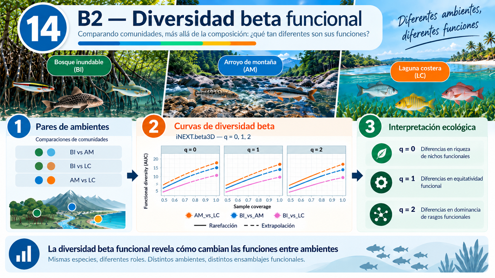
Para reforzar la lógica de comparación entre comunidades, se construyen pares de ambientes.
Código
amb_id <- c("BI", "AM", "LC") # Define el orden de los ambientes a comparar
pares <- combn(
amb_id,
2, # Genera todas las combinaciones posibles de a pares
simplify = FALSE
)
nombres_pares <- map_chr(
pares,
\(x) paste(x, collapse = "_vs_") # Construye el nombre de cada comparación
)
biol_beta <- set_names(
map(
pares,
\(p) biol_ambiente[, p, drop = FALSE] # Extrae las dos columnas correspondientes a cada par
),
nombres_pares # Asigna el nombre de cada par a la lista
)
names(biol_beta) # Muestra los nombres de los tres pares generados[1] "BI_vs_AM" "BI_vs_LC" "AM_vs_LC"14.1 iNEXTbeta3D()
Código
fd_b2 <- iNEXTbeta3D(
data = biol_beta, # Lista de pares de ambientes a comparar
diversity = "FD", # Dimensión funcional
q = c(0, 1, 2), # Órdenes de diversidad a estimar
datatype = "abundance", # Tipo de dato: abundancias
base = "coverage", # Estandariza por cobertura muestral
nboot = 30, # Número de remuestreos bootstrap
FDdistM = as.matrix(fd_dist), # Matriz de distancias funcionales
FDtype = "AUC", # Método de área bajo la curva
FDcut_number = 30 # Número de umbrales de distancia considerados
)14.2 Curvas beta
Código
ggiNEXTbeta3D(
fd_b2, # Resultado de iNEXTbeta3D()
type = "B" # Curvas de gamma, alfa y beta bajo estandarización por cobertura
)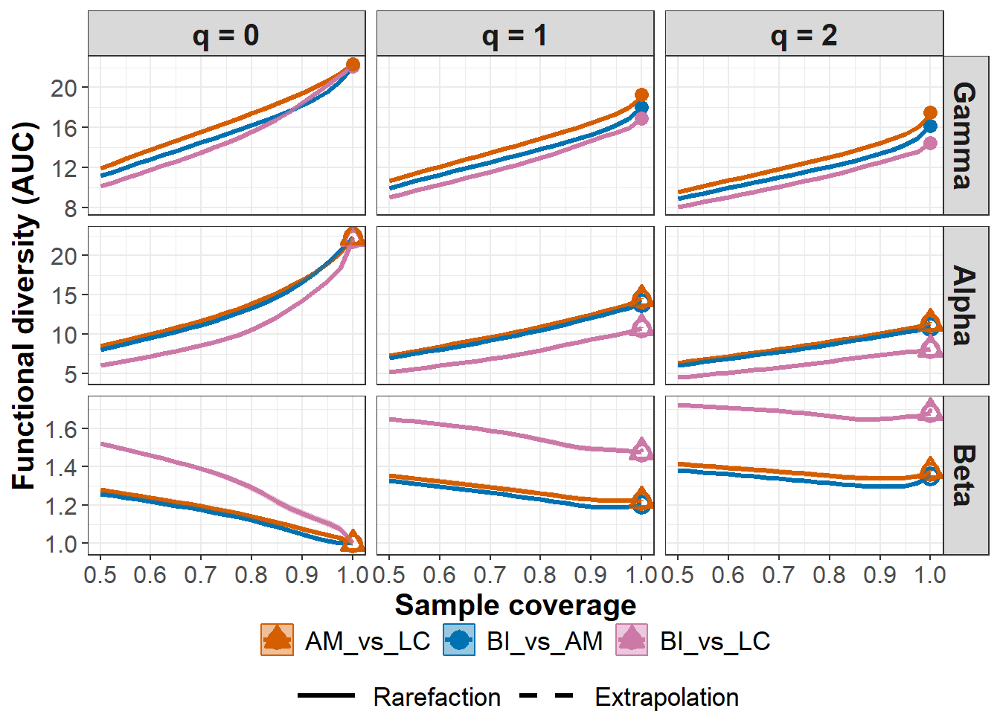
Pregunta 16
Para cada orden q:
- ¿qué comparación presenta mayor beta funcional?
- ¿el ordenamiento de las comparaciones cambia entre q = 0 y q = 2?
- ¿qué interpretación ecológica tendría que la mayor diferencia aparezca solamente en q = 0?
- ¿qué interpretación tendría que se mantenga también en q = 2?
15. Análisis de sensibilidad
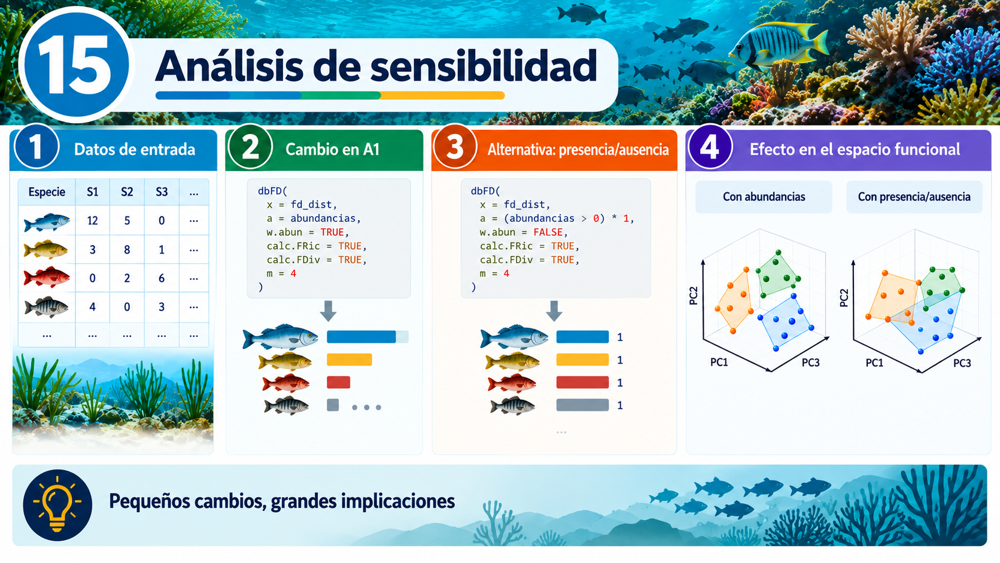
Una competencia importante en R consiste en no aceptar automáticamente un resultado como definitivo.
Se propone modificar una sola condición cada vez.
15.1 Cambiar el peso de las abundancias en A1
Código
fd_a1_presencia <- dbFD(
x = fd_dist, # Matriz de distancias funcionales (especie x especie)
a = t((abundancias > 0) * 1), # Transpuesta y convertida a presencia/ausencia (0/1)
w.abun = FALSE, # No pondera por abundancia (compara con w.abun = TRUE de la sección 6.1)
calc.FRic = TRUE, # Calcula la riqueza funcional (FRic)
calc.FDiv = TRUE, # Calcula la divergencia funcional (FDiv)
calc.CWM = FALSE, # No calcula las medias ponderadas por comunidad (CWM)
corr = "sqrt", # Aplica corrección de raíz cuadrada para garantizar euclidianidad
m = 4, # Limita el cálculo de FRic a 4 ejes de PCoA (ver nota de rendimiento en 6.1)
messages = FALSE # Suprime los mensajes de progreso de la función
)Pregunta 17
Compare conceptualmente:
w.abun = TRUE;w.abun = FALSE.
¿Qué componente de la información ecológica cambia al pasar de abundancias a presencia/ausencia?
16. Mini-desafío de depuración en RStudio
El siguiente código contiene dos problemas:
Código
fd_error <- dbFD(
x = rasgos_fd,
a = t(abundancias),
w.abun = TRUE,
calc.FRic = TRUE,
calc.FDiv = TRUE,
m = 4,
corr = "squareroot"
)
fd_error$FRICPregunta 18
Identifique los dos problemas sin ejecutar primero el bloque.
Para cada uno indique:
- qué está mal;
- cómo se detectaría en RStudio;
- cómo se corregiría;
- qué principio de reproducibilidad ayuda a recordar.
Nota
La construcción x = rasgos_fd no constituye por sí misma un error: dbFD() puede recibir una matriz de rasgos o una matriz de distancias. El ejercicio busca reconocer errores reales, no encontrar problemas donde no los hay.
17. Mini-desafío de interpretación ecológica
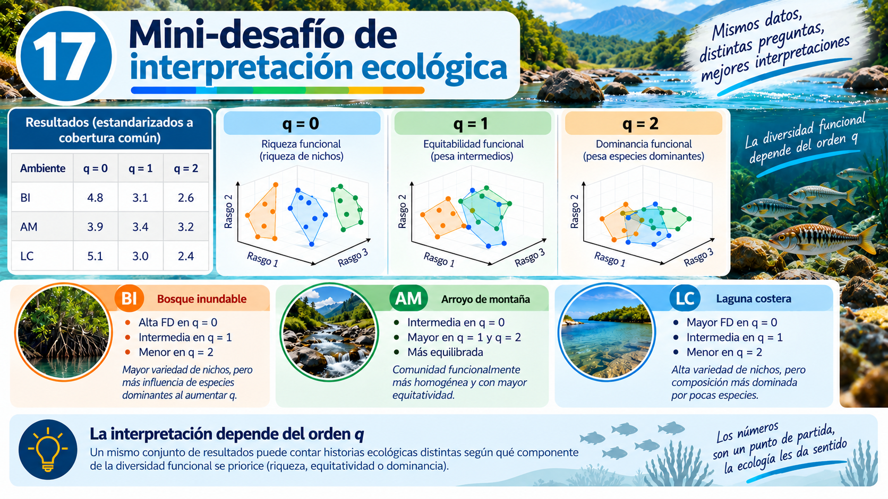
Se obtiene el siguiente resultado hipotético después de estandarizar a cobertura común:
| Ambiente | q = 0 | q = 1 | q = 2 |
|---|---|---|---|
| BI | 4.8 | 3.1 | 2.6 |
| AM | 3.9 | 3.4 | 3.2 |
| LC | 5.1 | 3.0 | 2.4 |
Pregunta 19
Sin realizar ningún cálculo adicional:
- ¿qué ambiente presenta mayor diversidad funcional efectiva para q = 0?
- ¿cuál presenta mayor diversidad funcional efectiva para q = 2?
- ¿qué sugiere el cambio de posición entre BI y AM al aumentar q?
- ¿por qué sería incorrecto resumir estos resultados diciendo simplemente que “BI es el ambiente más diverso”?
18. Integración A1 → A2 → B1 → B2
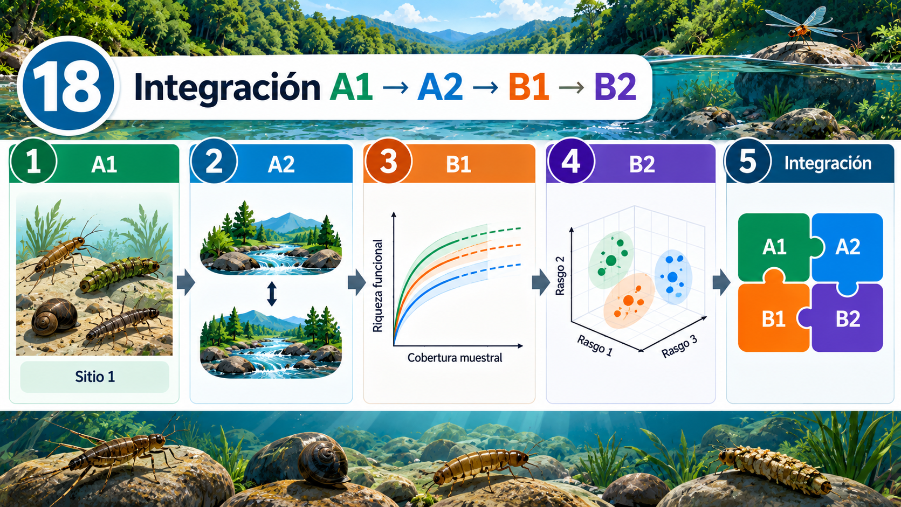
Pregunta 20
Complete la siguiente matriz conceptual:
| Bloque | Herramienta | Escala principal | Pregunta |
|---|---|---|---|
| A1 | dbFD() |
α / sitio | □ |
| A2 | Rao | α–β–γ | □ |
| B1 | iNEXT3D() |
α | □ |
| B2 | iNEXTbeta3D() |
β–γ | □ |
Después escriba un párrafo que explique por qué B1 y B2 no deben interpretarse simplemente como versiones “mejores” de A1 y A2.
19. Desafío final: diseñar un análisis reproducible
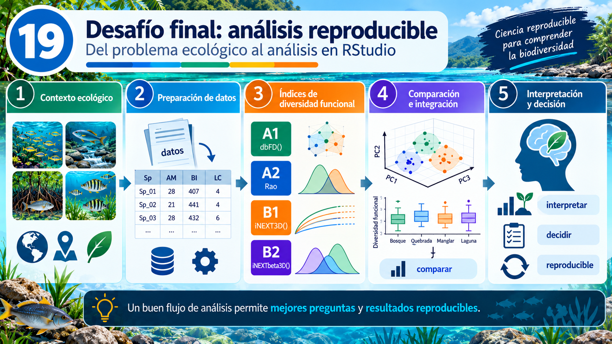
Se plantea ahora una situación hipotética:
Se dispone de cuatro comunidades de peces de un gradiente tropical: bosque inundable, quebrada de montaña, manglar y laguna costera. Los esfuerzos de muestreo son muy diferentes. Se han medido longitud corporal, longitud máxima, forma corporal, nivel trófico y seis variables dietarias binarias.
Pregunta 21
Diseñe un flujo de análisis en RStudio que incluya, en el orden apropiado:
- control de calidad de abundancias;
- organización de la matriz de rasgos;
- definición de binarias asimétricas;
- distancia de Gower;
- A1;
- A2;
- B1;
- B2;
- comparación de resultados;
- criterio para decidir si una diferencia puede interpretarse ecológicamente.
No se requiere escribir todavía todo el código. Se requiere justificar por qué cada paso aparece en ese orden.
20. Reto de transferencia
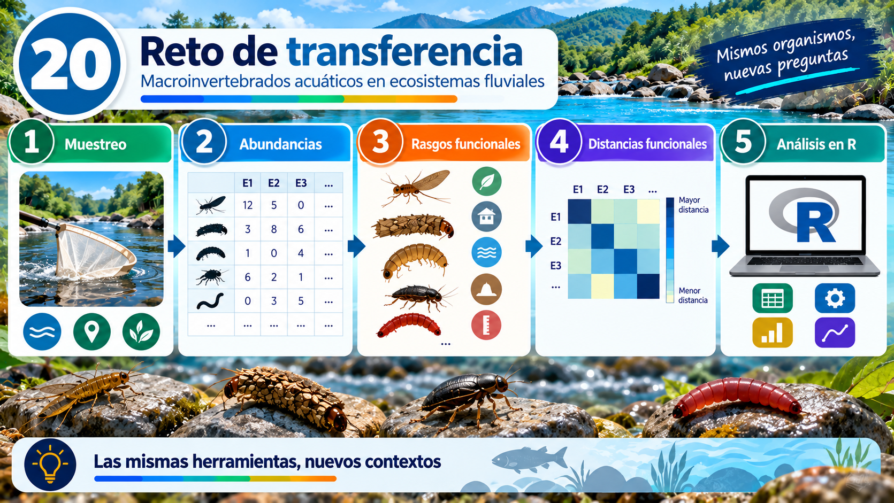
Pregunta 22
Se propone adaptar el ejercicio a otro grupo biológico tropical: macroinvertebrados acuáticos de ecosistemas fluviales.
Defina:
- unidad de muestreo;
- matriz de abundancias;
- rasgos funcionales;
- variables binarias potencialmente asimétricas;
- distancia funcional;
- pregunta de diversidad alfa;
- pregunta de diversidad beta;
- necesidad de estandarización;
- herramienta de R que utilizaría en cada etapa.
Finalmente, indique qué aspecto del diseño tendría que modificarse primero si los datos presentan una enorme diferencia de abundancia total entre estaciones.
21. Evidencia mínima que debe conservarse en RStudio
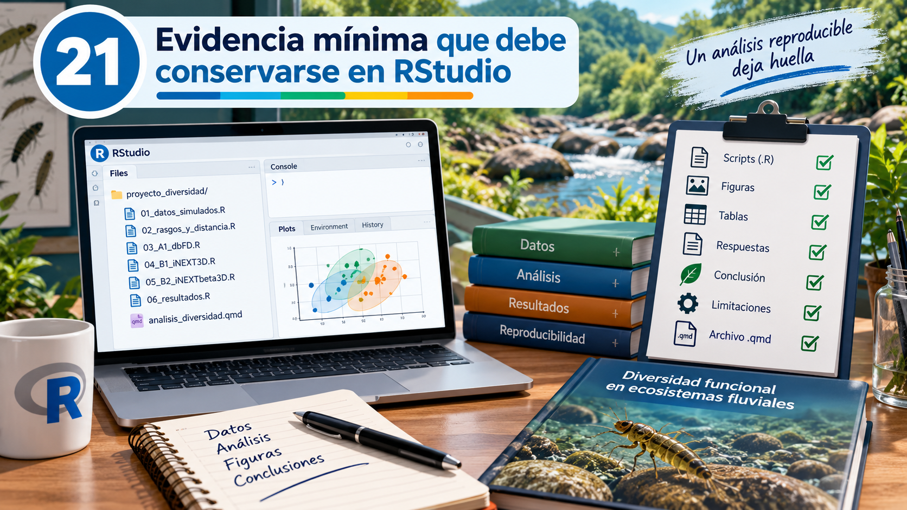
Al finalizar el cuestionario, se recomienda conservar en el proyecto:
01_datos_simulados.R
02_rasgos_y_distancia.R
03_A1_dbFD.R
04_B1_iNEXT3D.R
05_B2_iNEXTbeta3D.R
06_resultados.Ry un archivo .qmd que permita reconstruir el análisis.
Producto esperado
El resultado final no es solamente un conjunto de respuestas.
Se espera entregar:
- el
.qmdejecutado; - las figuras generadas;
- las tablas principales;
- las respuestas a las 20 preguntas;
- una conclusión ecológica breve;
- una identificación explícita de las principales limitaciones del análisis.
22. Criterios de autoevaluación
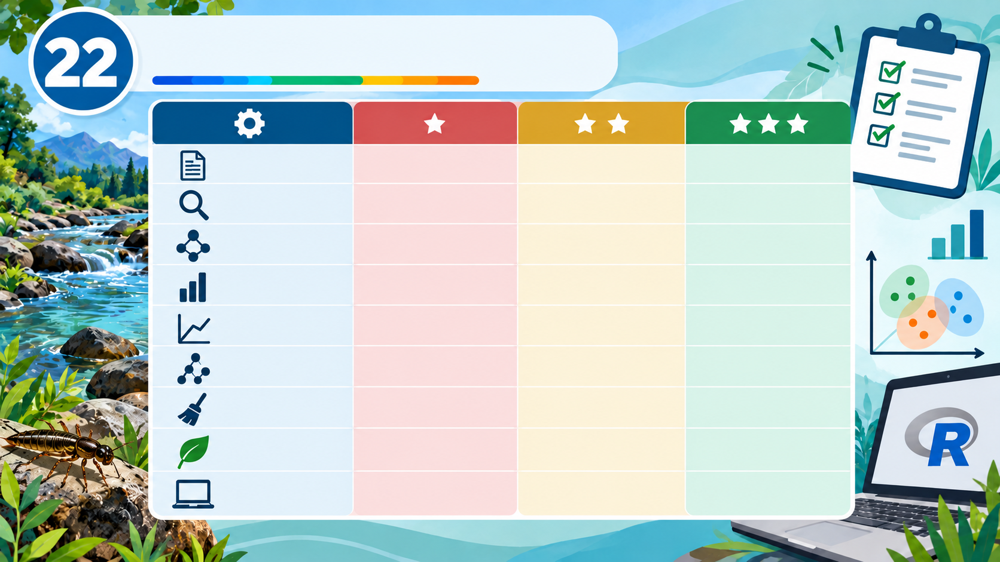
| Competencia | Inicial | En desarrollo | Consolidada |
|---|---|---|---|
| Organización de matrices en R | Requiere guía | Ejecuta con algunas correcciones | Construye y verifica autónomamente |
| Control de calidad | Detecta pocos problemas | Detecta problemas frecuentes | Diseña chequeos reproducibles |
| Distancia funcional | Ejecuta el código | Interpreta parcialmente | Justifica variables y distancia |
A1 con dbFD() |
Obtiene índices | Interpreta algunos índices | Relaciona cada índice con su propiedad funcional |
B1 con iNEXT3D() |
Ejecuta curvas | Interpreta cobertura | Justifica comparaciones estandarizadas |
B2 con iNEXTbeta3D() |
Ejecuta comparaciones | Interpreta beta | Relaciona beta, q y cobertura |
| Depuración | Copia correcciones | Localiza errores | Explica causa y solución |
| Interpretación ecológica | Describe números | Relaciona resultados con hipótesis | Integra método, resultado y limitación |
| Reproducibilidad | Conserva código | Organiza parcialmente | Produce un flujo reconstruible |
23. Cierre
La competencia central que se busca fortalecer es pasar de:
“sé ejecutar una función de R”
a:
“sé construir, revisar, interpretar y defender un análisis de diversidad funcional reproducible”.
La simulación permite modificar deliberadamente el esfuerzo de muestreo, la composición de las comunidades y los rasgos para ver cómo cambian las conclusiones. El análisis debe centrarse no solo en cuál comunidad tiene el valor mayor, sino en qué propiedad funcional se mide, bajo qué condiciones se compara y qué limitación acompaña al resultado.